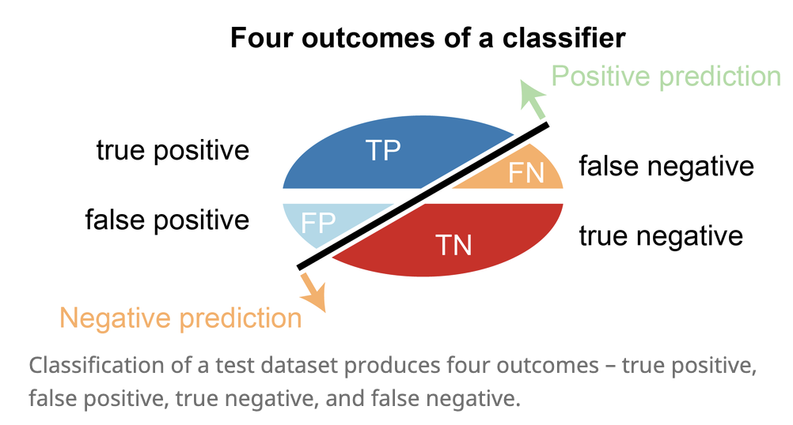

evaluation
view markdownlosses
- define a loss function $\mathcal{L}$
- 0-1 loss: $\vert C-f(X)\vert$ - hard to minimize (combinatorial)
- $L_2$ loss: $[C-f(X)[^2$
- risk = $E_{(x,y)\sim D}[\mathcal L(f(X), y) ]$
- optimal classifiers
- Bayes classifier minimizes 0-1 loss: $\hat{f}(X)=C_i$ if $P(C_i\vert X)=max_f P(f\vert X)$
- KNN minimizes $L_2$ loss: $\hat{f}(X)=E(Y\vert X)$
- classification cost functions
- misclassification error - not differentiable
- Gini index: $\sum_{i != j} p_i q_j$
- cross-entropy: $-\sum_x p(x): \log : \hat p(x) $, where $p(x)$ are usually labels and $\hat p(x)$ are softmax outputs
- only penalizes target class (others penalized implicitly because of softmax)
- for binary, $- (p \log \hat p + (1-p) \log (1-\hat p)$
measures
goodness of fit - how well does the learned distribution represent the real distribution?

- accuracy-based
- accuracy = (TP + TN) / (P + N)
- correct classifications / total number of test cases
- balanced accuracy = 1/2 (TP / P + TN / N)
- accuracy = (TP + TN) / (P + N)
- denominator is total pos/neg
- recall = sensitivity = true-positive rate = TP / P = TP / (TP + FN)
- what fraction of the real positives do we return?
- specificity = true negative rate = TN / N = TN / (TN + FP)
- what fraction of the real negatives do we return?
- false positive rate = FP / N $= 1 - \text{specificity}$
- what fraction of the predicted negatives are wrong?
- recall = sensitivity = true-positive rate = TP / P = TP / (TP + FN)
- fraction is total predictions
- precision = positive predictive value = TP / (TP + FP)
- what fraction of the prediction positives are true positives?
- negative predictive value = TN / (FN + TN)
- what fraction of predicted negatives are true negatives?
- precision = positive predictive value = TP / (TP + FP)
- F-score is harmonic mean of precision and recall: 2 * (prec * rec) / (prec + rec)
- NRI (controversial): compares 2 model’s binary predictions
-
curves - easiest is often to just plot TP vs TN or FP vs FN
- roc curve: true-positive rate (recall) vs. false-positive rate
- perfect is recall = 1, false positive rate = 0
- precision-recall curve
- summarizing curves
- AUC: area under (either one) of these curves - usually roc
- roc curve: true-positive rate (recall) vs. false-positive rate
- concordance = inter-rate reliability
- exact concordance - percentage where cohort is in total agreement (i.e. accuracy)
- Cohen’s kappa coefficient - 0 is uncorrelated, 1 is perfect, negative is inverse correlation
- $\kappa \equiv \frac{p_{o}-p_{e}}{1-p_{e}}=1-\frac{1-p_{o}}{1-p_{e}}$
- $p_o$ is relative observed agreement and $p_e$ is chance expected agreement
- weighted kappa coefficient - used when ordering for predicted labels (being off by more is given bigger weight)
comparing two things
- odds: $p : \text{not }p$
- odds ratio is a ratio of odds
cv
- cross validation - don’t have enough data for a test set
- properties
- not good when n < complexity of predictor
- because summands are correlated
- assume data units are exchangeable
- can sometimes use this to pick k for k-means
- data is reused
- not good when n < complexity of predictor
- types
- k-fold - split data into N pieces
- N-1 pieces for fit model, 1 for test
- cycle through all N cases
- average the values we get for testing
- leave one out (LOOCV)
- train on all the data and only test on one
- then cycle through everything
- random split - shuffle and repeat
- one-way CV = prequential analysis - keep testing on next data point, updating model
- ESCV - penalize variance between folds
- k-fold - split data into N pieces
- properties
-
regularization path of a regression - plot each coeff v. $\lambda$
- tells you which features get pushed to 0 and when
- for OLS (and maybe other linear models), can compute leave-one-out CV without training separate models
stability
- computational stability
- randomness in the algorithm
- perturbations to models
- generalization stability
- perturbations to data
- sampling methods
- bootstrap - take a sample
- repeatedly sample from observed sample w/ replacement
- bootstrap samples has same size as observed sample
- subsampling
- sample without replacement
- jackknife resampling
- subsample containing all but one of the points
other considerations
- computational cost
- interpretability
- model-selection criteria
- adjusted $R^2_p$ - penalty
- Mallow’s $C_p$
- $AIC_p$
- $BIC_p$
- PRESS